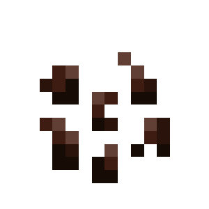

About
Green onion seeds are items that can be obtained from breaking wild green onions, or more abundantly harvested from green onion crops, and are used to plant them.
Green onion crops are planted in farmland and used to grow green onions and green onion seeds.
Config
Set Enable Green Onions to Yes/true (default) to use them, or No/false to hide them. All green onion blocks, items, and seeds use this option.
First Obtain
Green onion seeds are first obtained from breaking wild green onions. These plants spawn in flower forest biomes. Visit the wild green onion page to read more about it.
Farming
Fully grown green onion crops drop 1 green onion and 1 to 4 green onion seeds per harvest. Harvesting with a Fortune-enchanted tool increases the number of seeds dropped but does not increase the yield of green onions.
Planting
Green onion seeds can be planted on farmland in the tag: minecraft:supports_crops
Green Onion Seeds

| Renewable | Yes (Green Onion Crops) |
| Stackable | Yes (64) |
| Tool | Any tool |
| Blast Resistance | 0 |
| Hardness | 0 |
| Luminous | No |
| Transparent | Yes |
| Catches fire from lava | No |